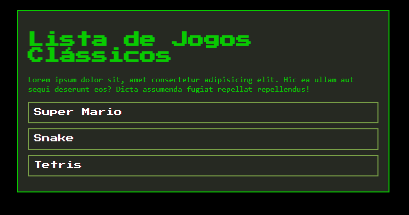

Leticia Avelar Araujo
Desenvolvedor Front-end no Programa Trilhas
Sou estudante de programação apaixonada por front-end e por dar vida a designs utilizando o Figma com HTML e CSS. Movida pela curiosidade de aprender todos os dias, busco transformar boas ideias em telas interativas, funcionais e que façam sentido para quem usa.